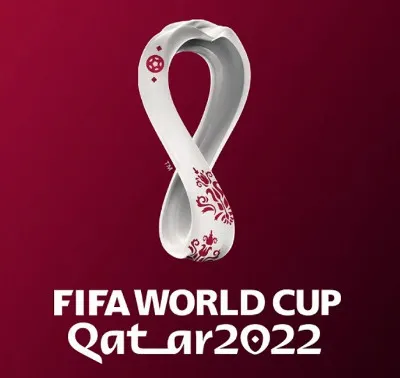
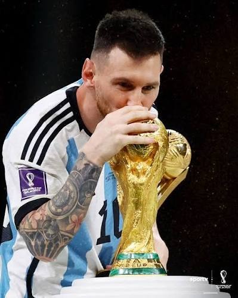

A Copa do Mundo de 2022 ocorreu no Catar, sendo a primeira edição realizada no Oriente Médio. O torneio foi disputado em um raio de apenas 50 quilômetros, permitindo que torcedores assistissem a mais de um jogo por dia.src da tag img.

A Argentina conquistou a Copa do Mundo FIFA de 2022, no Catar, ao derrotar a França nos pênaltis após um empate de 3-3 na prorrogação. A trajetória do tricampeonato argentino foi marcada pela consagração de Lionel Messi como o principal destaque e melhor jogador da competição.CSS (lá em cima na tag style), alterar o tamanho das fontes e adicionar novas postagens simplesmente copiando e colando este bloco de código.